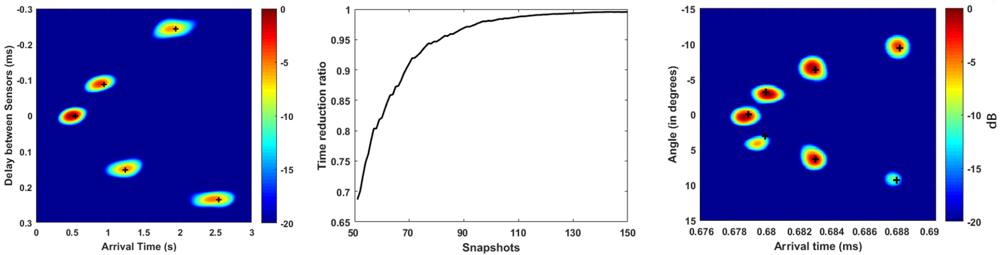
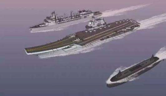
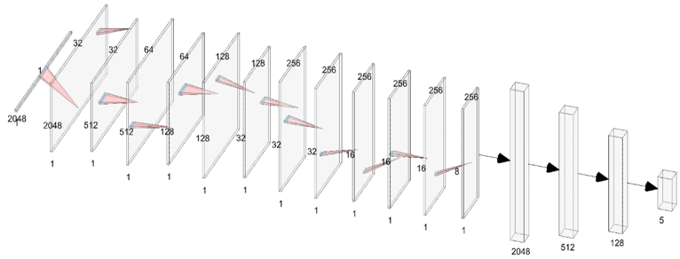
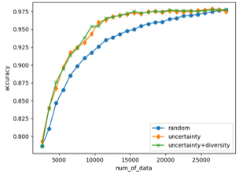
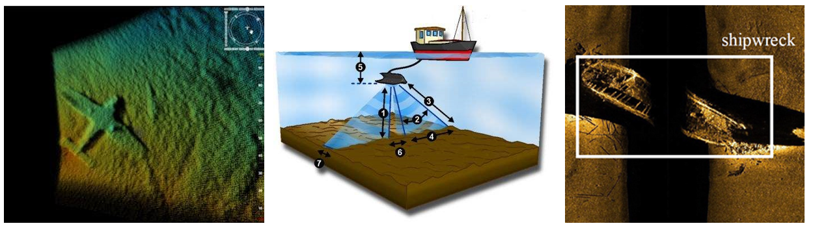

姜龙玉
分别从武汉大学、东南大学及法国格勒诺布尔大学获得工学学士、硕士及博士学位，现为东南大学计算机学院、软件学院、人工智能学院教授、博士生导师。主要从事水声信号与图像处理，
人工智能及大数据等方面的研究工作，近年来先后主持或参与法国国家科研署基金、军委装备发展部预研基金、国家自然科学基金、GF科工局稳定支持，教育部留学回国人员基金等多项科研项目，
在IEEE Journal of Oceanic Engineering, The Journal of the Acoustical Society of America，IEEE Transactions on Circuits and Systems I: Regular Paper 等领域顶刊顶会发表论文50余篇。
获得中国海洋工程科学技术奖（排名第一）、国家级首届xx比赛一等奖、国家级教学成果一等奖、江苏省教学成果一等奖、东南大学青年教师授课竞赛奖、东南大学教学成果一等、二等奖，中泰国立奖教金等奖励。
主要社会兼职有国家留学基金委公派出国项目会评专家，中国图形图像协会视觉传感专委会委员，江苏省通信协会水下通信专委会委员，国家自然科学基金通讯评审。
JLY@seu.edu.cn
承担项目
1. 国家基金，主动稳健声纳图像目标检测技术研究，2021.12- 2023.12，主持；
2. 国家基金，复杂环境下无人艇水下目标探测识别技术研究，2022. 2- 2023.12，主持；
3. 国家项目，xxx，2022. 6- 2023.06，主持；
4. 广东省科技厅重点研发计划项目，深远海养殖装备智能感知装备关键技术研究，2021.1- 2023.12，课题负责人；
5. 国家项目，xxx，2019.1-2020.12，主持；
6. 国家自然科学基金,浅海高分辨稳健阵列处理技术研究，2019.1-2022.12，主持
7. 国家项目，xxx，2017.1-2020.12，主持
8. 国家基金,浅海高分辨稳健阵列处理技术研究，2018.9-2020.8, 主持
9. 国家自然科学基金，浅海波导中高分辨阵列处理技术研究，2015.1-2017.12，主持
10. 声场声信息国家重点实验室开放课题，高阶多维高分辨阵列处理技术研究，2016.1-2017.12，主持
11. 教育部留学回国人员基金,浅海波导中高分辨率线路径分离算法研究，2016.1-2017.12，主持
12. 国家自然科学基金，基于癫痫信号的脑连通性研究，2015-2017，参与
获得成果
[1] 中国专利，李勇鹏，姜龙玉，葛张样，张子腾，韩宇，基于强化学习的声呐图像目标识别方法，专利号：202210535005.9，已公开。
[2] 中国专利，伍家松，孟凡满，舒华忠，孔佑勇，杨冠羽，杨淳沨，姜龙玉，章品正，一种包含戴口罩人脸的语音分离数据集制作方法，专利号：202210228919.0，已公开。
[3] 中国专利，伍家松，王正青，舒华忠，孔佑勇，杨冠羽，杨淳沨，姜龙玉，章品正，一种自动采集并处理生成音乐情感数据库的方法，专利号：202210205546.5，已公开。
[4] 中国专利，毕然，姜龙玉，一种基于自监督学习的水声目标定位方法，专利号：202210841975.1，已公开。
[5] 中国专利，伍家松，王晨琳，孔佑勇，杨淳沨，杨冠羽，姜龙玉，沈傲东，舒华忠，一种真实场景下的多模态数据集的构建方法，专利号：202110951389.8，已公开。
[6] 中国专利，杨磊，姜龙玉，一种基于宽带压缩感知的超短基线水下声源定位方法，专利号：202110138315.2，已公开。
[7] 中国专利，吕健坤，姜龙玉，基于主动深度学习的水下目标识别方法，专利号：202110377531.2，已公开。
[8] 中国专利，伍家松，李清淳，孔佑勇，杨淳沨，杨冠羽，姜龙玉，陈阳，舒华忠，一种使用单个带噪语音样本进行语音去噪的方法，专利号：202111100709.5，已公开。
[9] 中国专利，吴志翔，姜龙玉，金睿，一种基于深度学习的水下声源定位方法，专利号：201910236715.X，已授权。
[10] 中国专利，伍家松，陈曦，孔佑勇，杨淳沨，杨冠羽，姜龙玉，沈傲东，舒华忠，一种基于慕课语音数据集的语音合成方法，专利号：202110781210.9，已公开。
[11] 中国专利，姜龙玉，一种基于二维任意阵子空间的超短基线定位水下声源方法，专利号：202110111140.6，已公开。
[12] 中国专利，伍家松，闻婷，孔佑勇，杨淳沨，杨冠羽，姜龙玉，陈阳，舒华忠，一种新闻类长视频描述数据集构建方法，专利号：202110852417.0，已公开。
[13] 中国专利，伍家松，李晓燕，孔佑勇，杨淳沨，杨冠羽，姜龙玉，陈阳，舒华忠，一种包含手语的新闻类视频描述数据集构建方法，专利号：201910845200.X，已公开。
[14] 中国专利，邓雨田，姜龙玉，基于主动学习的声呐图像目标识别方法，专利号：201911099760.1，已公开。
[15] 中国专利，伍家松，李桃桃，舒华忠，孔佑勇，杨冠羽，杨淳沨，姜龙玉，章品正，一种手语视频中自动裁剪多模态数据的方法，专利号：201910835953.2，已授权。
[16] 中国专利，徐方进，姜龙玉，马琪翔，於文雪，一种基于实例分割的声呐图像目标识别方法，专利号：201910236980.8，已公开。
[17] 中国专利，姜龙玉，张雅南，周逍，杨淳沨，王世杰，一种基于四阶累积量的宽带凸优化DOA估计方法，专利号：CN201810957532.2，已授权。
[18] 中国专利，伍家松，徐玲，孔佑勇，杨冠羽，章品正，杨淳沨，姜龙玉，舒华忠，一种基于八元数卷积神经网络的图像分类方法，专利号：CN201810748292.5，已授权。
[19] 中国专利，金睿，姜龙玉，宋文博，王世杰，杨淳沨，一种基于稀疏贝叶斯学习的源定位方法，专利号：CN201810540578.4，已授权。
[20] 中国专利，杨淳沨，杨文琪，刘彦超，伍家松，孔佑勇，姜龙玉，杨冠羽，舒华忠，基于三维非线性偏直接相干函数的脑电信号间效应连通性检测方法，专利号：CN201810554759.2，已授权。
[21] 中国专利，姜龙玉，张喆，基于子空间的压缩感知高分辨阵列处理方法，专利号：CN201711308659.3，已授权。
[22] 中国专利，马麒翔，姜龙玉，基于深度学习技术的声呐图像目标识别方法，专利号：CN201711036788.1，已授权。
[23] 中国专利，姜龙玉，基于常量时间奇异值分解的快速高阶线路径分离方法，专利号：CN201710682906.X，已授权。
[24] 中国专利，伍家松，达臻，陈雄辉，杨启晗，姜龙玉，孔佑勇，舒华忠，一种基于压缩型卷积神经网络的图像去噪方法，专利号：CN201710286383.7，已授权。
[25] 中国专利，贺润国，姜龙玉，宋文博，洪亚萍，伍家松，舒华忠，并行磁共振的图像重建方法、装置及并行磁共振成像系统，专利号：CN201610264588.0，已授权。
[26] 中国专利，宋文博，姜龙玉，张喆，伍家松，舒华忠，一种基于高阶累计量的波达快速估计方法，专利号：CN201610853071.5，已授权。
[27] 中国专利，姜龙玉，贺润国，洪亚萍，张喆，伍家松，舒华忠，一种多路径传播宽带主动声信号的分离方法，专利号：CN201610132769.8，已授权。
[28] 中国专利，姜龙玉，洪亚萍，伍家松，贺润国，舒华忠，基于高阶累积量的多路径传播声信号分离方法，专利号：CN201610006173.3，已授权。
[29] 中国专利，达臻，伍家松，姜龙玉，孔佑勇，杨淳沨，舒华忠，一种基于保局映射与主成分分析的图像分类方法，专利号：CN201510274498.5，已授权。
[30] 中国专利，吴丹，伍家松，姜龙玉，杨淳沨，达臻，舒华忠，一种基于核主成分分析网络的图像分类方法，专利号：CN201510037296.9，已授权。
[31] 中国专利，伍家松，杨淳沨，姜龙玉，陈阳，韩旭，舒华忠，一种基于四元数散射网络的彩色图像纹理分类方法，专利号：CN201410326277.3，已授权。
论文
[1] Ma Q. , Jiang L. , Yu W. . Lambertian-based Adversarial Attacks on Deep-learning-based Underwater Side-scan Sonar Image Classification[J]. Pattern Recognition, 2023: 109363.
[2] Jiang L. , Zhang Z, Roux P. . Three-dimensional higher-order raypath separation in a shallow-water waveguide[J]. JASA Express Letters, 2022, 2(7): 076001.
[3] Xu F. , Huang J. , Wu J, Jiang L.* . Active Mask-Box Scoring R-CNN for Sonar Image Instance Segmentation[J]. Electronics, 2022, 11(13): 2048.
[4] Lv J. , Jiang L.* , et al, Active Deep Learning Technique for Underwater Target Recognition[C], IEEE Oceans, 2022: 1-9.
[5] 姜龙玉, 王彪, 何呈, 伍家松, 彭子龙. 浅海高分辨阵列处理技术[J]. 中国科技成果, 2020(20): 65-66.
[6] Jiang L. , Cai T, Ma Q. , et al. Active object detection in sonar images[J]. IEEE Access, 2020, 8: 102540-102553.
[7] Zhu J, Liu Y, Chen D, Jiang L, He J. X (2239) and η (2225) as hidden-strange molecular states from ΛΛ interaction[J]. Chinese Physics C, 2020, 44(12): 123103.
[8] Ma Q. , Jiang L.* , Yu W. , et al. Training with noise adversarial network: A generalization method for object detection on sonar image[C], Proceedings of the IEEE/CVF Winter Conference on Applications of Computer Vision, 2020: 729-738.
[9] Liu J, Gambarota G. , Shu H. , Jiang L. , Benjaming L. , Olivier B. , Ahmad K. . On the identification of the blood vessel confounding effect in intravoxel incoherent motion (IVIM) Diffusion-Weighted (DW)-MRI in liver: An efficient sparsity based algorithm[J]. Medical Image Analysis, 2020, 61: 101637-101637.
[10] 沈力, 姜龙玉*, 宋文博. 浅海波导常量时间声途分离算法[J]. 声学技术, 2019, 38(5): 119-120.
[11] Jiang L. , Song W. , Zhang Z. , et al. Fast raypath separation based on low-rank matrix approximation in a shallow-water waveguide[J]. The Journal of the Acoustical Society of America, 2018, 143(4): 271-277.
[12] Wu J. , Qiu S. , Kong Y. , Jiang L. , et al. PCANet: An energy perspective[J]. Neurocomputing, 2018, 313: 271-287.
[13] Yang C. , Xiang W. , Wu J. , Kong Y. , Jiang L. , et al. Research on effective connectivity of intracerebral electroencephalogram based on Wiener-Granger Causality Index modified by generalized Akaike's Information Criterion[J]. Journal of Biomedical Engineering, 2018, 35(5): 665-671.
[14] Liu J. , Karfoul A. , Jiang L. , et al. ViP-CSI: Virtual Phantom Chemical Shift Imaging[J]. Applied Magnetic Resonance, 2018, 49: 369-380.
[15] Liu J. , Gambarota G. , Shu H. , Jiang L. , et al. All-in-one approach for constrained all-voxel tri-exponential IVIM model identification: Application to diffusion-weighted MR imaging in the liver[C]2018 52nd Asilomar Conference on Signals, Systems, and Computers. IEEE, 2018: 1192-1196.
[16] Yang C. , Xiang W. , Wu J. , Kong Y. , Jiang L. , et al. Research on effective connectivity of intracerebral electroencephalogram based on Wiener-Granger Causality Index modified by generalized Akaike's Information Criterion[J]. Journal of Biomedical Engineering, 2018, 35(5): 665-671.
[17] 杨全胜,翟玉庆,舒华忠,姜龙玉,吕倩. 贯通式与虚实结合的计算机系统实践平台建设[J]. 计算机教育,2018(1):19-24.
[18] 杨淳沨,向文涛,伍家松,孔佑勇,姜龙玉,Le Bouquin Jèannes Régine,舒华忠. 基于通用赤池信息量准则改进维纳-格兰杰因果索引算法的颅内脑电效应连通性研究[J]. 生物医学工程学杂志,2018,35(5):665-671.（北大核心，ei）
[19] Jiang L. , He R. , Liu J. , et al. Phase-constrained parallel magnetic resonance imaging reconstruction based on low-rank matrix completion[J]. IEEE Access, 2017, 6: 4941-4954.
[20] Jiang L. , He R. , Hong Y. , et al. Two-dimensional active raypath separation using examination of the roots of the spectrum polynomial[J]. The Journal of the Acoustical Society of America, 2017, 142(4): 408-414.
[21] Jiang L. , Hong Y. , Roux P. , et al. Active wideband higher-order raypath separation in multipath environment[J]. The Journal of the Acoustical Society of America, 2017, 141(1): 38-44.
[22] Jiang L. , Roux P. , Mars J I. Raypath separation with a high-resolution algorithm in a shallow-water waveguide[J]. IEEE Journal of Oceanic Engineering, 2017, 43(1): 119-130.
[23] Liu J. , Gambarota G. , Shu H. , Jiang L. , et al. Efficient sparsity-based algorithm for parameter estimation of the tri-exponential intra voxel incoherent motion (IVIM) model: Application to diffusion-weighted MR imaging in the liver[C]2017 IEEE 7th International Workshop on Computational Advances in Multi-Sensor Adaptive Processing (CAMSAP). IEEE, 2017: 1-5.
[24] Wu J. , Jiang L. , Chen Y. , et al. A generalized modified split-radix FFT algorithm for N= q× 2m and its applications[C]2014 7th International Congress on Image and Signal Processing. IEEE, 2014: 799-803.
[25] Jiang L. , Mars J I. Automatic detection of the number of raypaths in a shallow-water waveguide[J]. IEEE Journal of Oceanic Engineering, 2013, 39(4): 713-723.
[26] Jiang L. , et al. Raypath separation with high resolution processing[C]. IEEE Oceans, 2011: 1-5.
[27] Jiang L., Mars J. Automatic detection of the number of raypaths in colored noise using short-length samples[J]. The Journal of the Acoustical Society of America, 2011, 130(4): 2392-2392.
[28] Jiang L. , Shu H. , Wu J. , et al. A novel split-radix fast algorithm for 2-D discrete Hartley transform[J]. IEEE Transactions on Circuits and Systems I: Regular Papers, 2009, 57(4): 911-924.
[29] Jiang L. A novel high-resolution algorithm for separating ray paths interrupted by colorful noise[J]. The Journal of the Acoustical Society of America, 2015, 137(4): 2438-2438.
[30] Wu D. , Wu J. , Zeng R. , Jiang L. , et al. Kernel principal component analysis network for image classification[J]. arXiv e-prints, 2015.
[31] 姜龙玉,舒华忠,伍家松,等. 一种新的三维离散Hartley变换的分裂基快速算法[J]. 电子学报,2009,37(6):1252-1255.（北大核心）

智慧海洋信息科学与技术实验室
课题组现共有20余名硕博士研究生。课题组研究方向包括水声信号、人工智能、图像处理及大数据等。
课题组面向学术和工程培养具有独立思考能力、创新精神和较强工程实践能力及良好综合素质的人才。
课题组与法国格勒诺布尔大学、美国伦斯勒理工、法国巴黎综合理工等国外知名学校建立了良好的学生联合培养机制。
研究方向
研究方向一:水下声学目标定位与探测


合理有效的利用海洋资源，成为海洋经济强国
有效管理和控制部分海域，成为地区性海上优势力量
拥有雄厚的海洋外交能力和对地区及世界海洋事务的强大影响力
当前和今后一个时期，国家的威胁主要来自海上，而当下国家发展的空间、资源主要来自海洋。在当前的环境之下，水下目标的探测，定位，识别和跟踪是国家海洋需求中的关键技术
水下目标的定位与探测同时具有商业和军事上的重要价值，是未来发展海下微小无人探测器的重要基础和前提
课题组主要从事基于深度学习、压缩感知等技术的水下声源定位、基于主动学习的水下目标探测跟踪等研究


项目示例1:高分辨阵列处理算法研究


浅海环境中，多路径效应产生的相干信号会对这些声信号的分离造成了较大的干扰。
本项目提出了基于双阵列的高阶累积量声信号分离算法和基于子空间的压缩感知波达方向估计算法，用于提高声信号分辨力以及对噪声的鲁棒性。
项目示例2:多维阵列处理算法研究

浅海波导中声速的微小变化会导致接收信号传播时间的明显变化。
本项目利用双阵列架构和压缩感知理论提高声线路径识别与估计性能，进而在前端提高海洋声学层析的性能。
研究方向二:水下声学目标识别

水下目标识别技术在对海洋的开发与争夺中发挥着不可替代的作用
在民用领域，水下目标识别是现代海上智能监控系统的重要组成部分
在军用领域，水下目标目标识别技术在预警探测、精确指导、战场指挥和侦察识别都有广泛应用
水下目标数量的增多，降噪技术的发展，对水下目标识别带来极大的挑战，利用人工智能技术对水下目标进行快速且高准确率的识别是当前的发展趋势
项目示例:基于主动深度学习的水下目标识别


传统分类识别方法依赖数学建模或人工构建特征，深度学习模型需要数据驱动，但声呐信号数据标注工作需要专业知识储备
本项目将主动学习算法扩展到被动声呐目标识别工作中。构建基于主动深度学习的被动声呐目标识别框架，提高数据标注效率。
课题组毕业去向
2023：吕建坤（华泰证券）；毕然（趋势科技）；黄建兴（中兴）
2022：邓雨田（国家电网）；杨磊（百度）；黄俊达（中国农业银行）；李勇鹏（阿里）；冯兆麟（华为）
2021：吴志翔（网易）；徐方进（思科）；奚望（昆山交运局）
2020：马麒翔（法国雷恩一大）；金睿（中兴）；沈力（国家电网）；周逍（中国移动）
2019：宋文博（阿里）；孙亚晶（华为）
2018：张喆（万革始）；张雅楠（中信证券）
简历投递
欢迎乐观善良，有好奇心，有理想，能脚踏实地，持之以恒努力的同学加入课题组！对学术感兴趣的优秀同学可推荐至MIT、UCSD等知名高校继续深造；对工程应用感兴趣的同学可推荐至腾讯、阿里、中国电科集团、船舶集团等知名企业实践就业！
请发送简历至 JLY@seu.edu.cn
欢迎与我联系申请东南大学至善博士后或博士后职位！待遇从优，出站后可申请副高。
Welcome to use this website's
source code, just add a link back to here.
✩